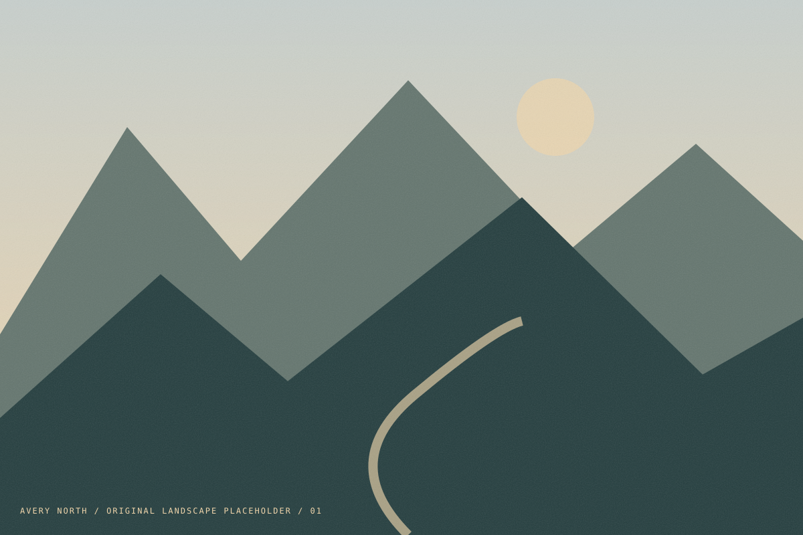

Landscape / 2026
High country, slowly. ↗
A few days above the noise.
Independent photographer / image maker
Stories about place, people,
and the space in between.

01 / High country, slowly. View the story ↗I’m Avery, a fictional photographer drawn to open spaces and the stories we find on the way.
This portfolio is an image-led study of an independent photography practice. The landscapes are original illustrations used as placeholders, not photographs by a real artist.
About the studio →Landscape / 2026
A few days above the noise.
Editorial / 2026
A coast is never quite the same place twice.
Illustrative names only. No real clients or endorsements.
Studio editions / demonstration shop
Original landscape studies, imagined as small print editions.
Explore the print shop ↗